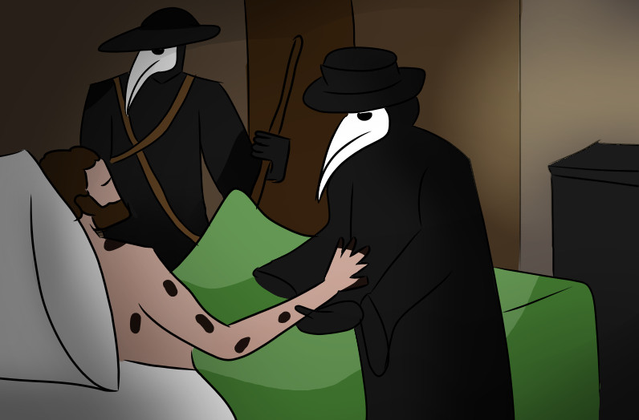

"CRISIS DEL SIGLO XIV":
Los ya no podían producir lo necesario para alimentar a una población mayor y no habían nuevas tierras
fértiles para labrar. Las malas cosechas y grandes hambrunas.
La población débil una epidemia/brote llamado "Peste Negra" o "Peste bulonica" qué fue causada por las ratas que
bajaban de los barcos.
El hacinamiento de la población facilitó el contagio y murieron 25 millones de personas; esto derrumbó las poblaciones
feudales de producción y fortalecieron las monarquías.

© Florencia Francés Perez, Mateo Gamarra <3.